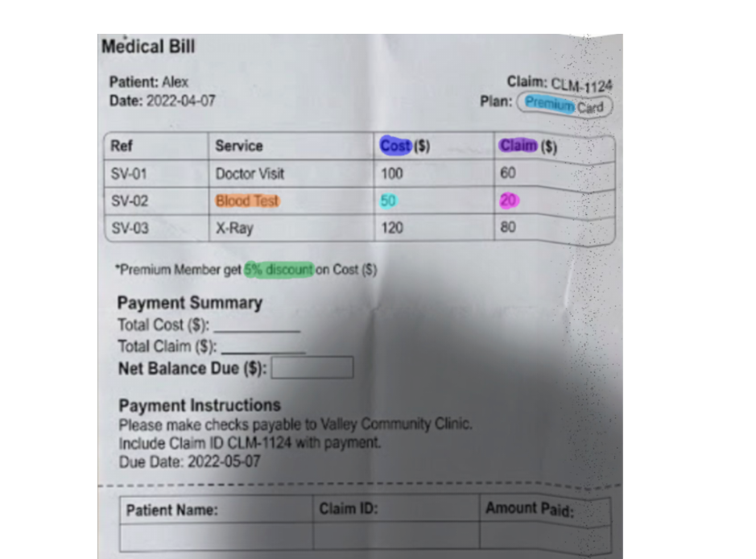
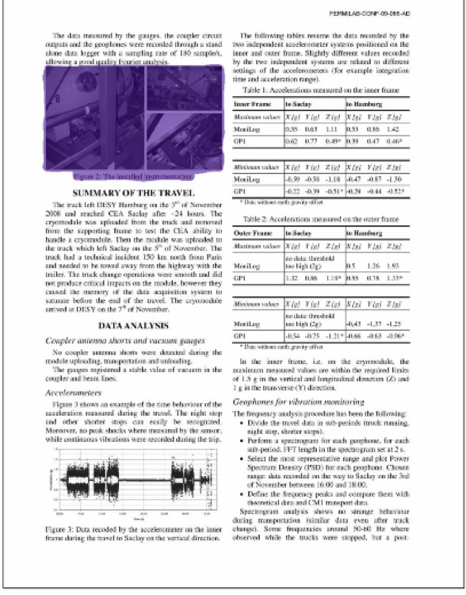
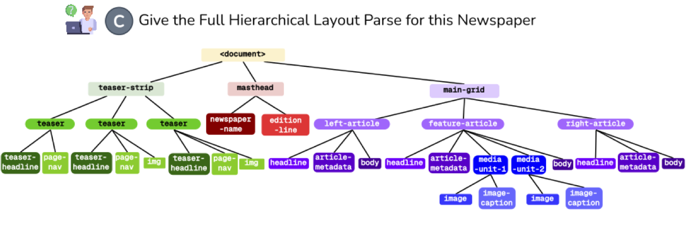

Overview
This post summarises two years of work on document intelligence at BharatGen and IIIT Hyderabad. It rests on two ideas, and the second depends on the first.
First, a document needs a text representation that loses nothing. Almost everything we do with documents at scale (search, retrieval, translation, archiving, and above all generating training data) runs on a text version of the page, not on the pixels. But every common way of turning a page into text throws information away. If the text form is lossy, everything built on it inherits the loss. So the first job is a text representation that keeps everything on the page: the words, the structure, where things sit, and how they look.
Second, grounding should be a mask, not a string of coordinates. When we ask a vision-language model to show its evidence, the usual approach makes it type out bounding-box coordinates as text. That is brittle. When people show evidence on a page, they do not read out pixel coordinates; they mark it, usually with a highlighter. Adding SAM gives a vision-language model a smart highlighter: instead of telling us coordinates, it shows us by marking the page. Vision-language models are very good at producing answers; SAM is very good at turning a prompt into a precise mask. The right model uses both strengths, joined end to end, and trained end to end, with the language model telling the segmenter what to mask and at what granularity.
The two ideas connect in a loop. REPLICA turns a page into a complete text form. That text form lets us generate grounded training data at scale without anyone drawing a box. The data trains three grounding models. And the last of them, DocLayout-VL, feeds back into REPLICA: it takes over REPLICA's first stage, where an ensemble of layout detectors used to sit. The system that made the data is improved by a model trained on that data. Figure 1 shows the loop; the rest of the post follows it in order.
Along the way, each model introduces a capability that did not exist before, and each sets the state of the art on its task:
- M3Grounder: mask-based, multi-span, multi-granular grounded document VQA.
- DoCoG: step-wise, multi-type grounded chain-of-thought VQA, with every intermediate step grounded.
- DocLayout-VL: open-set, hierarchical and promptable document layout understanding.
A single design principle runs through all four systems: divide the work between modules and give each module the task it does best. Agents handle judgment and tools handle deterministic steps; a language model decides what to ground and a segmenter decides where. Each system section ends with a short summary of who does what.
Figure 1 · The research loop
Information loss in document conversion
Start with what a page actually holds. Take an invoice. It has text: the words and numbers. It has hierarchy: a header, a table with rows and columns, a totals block. It has geometry: the two-column header, the amounts aligned under their column. And it has appearance: the bold total, a cancelled line that is struck through, a red OVERDUE stamp.
Now convert it, one layer at a time. OCR-style text keeps every word but turns the page into a wall of prose: the total looks like the fine print. Markdown-style output recovers the heading and the table, a big step for machines, but there is still no page: nothing says which number sits under which column. Adding position brings the layout back. Only the last layer brings back the strikethrough and the stamp, and those carry meaning: the cancelled line is not owed, and the invoice is overdue. Drop the appearance and the document says something different.
Figure 2 · The same invoice, rebuilt one layer at a time
Boston, MA 02116
accounts@meridian.co · +1 617 555 0142
88 Kingsway, Chicago, IL 60604
| Description | Qty | Rate | Amount |
|---|---|---|---|
| Consulting services — Q2 retainer | 10 | 150.00 | 1,500.00 |
| Software licence, annual | 1 | 2,400.00 | 2,400.00 |
| Support retainer — Apr, May, Jun | 3 | 800.00 | 2,400.00 |
| On-site integration, 12 May | 1 | 960.00 | 960.00 |
| Data migration, per record | 480 | 0.25 | 120.00 |
| Subtotal | 4,980.00 |
| Credit — cancelled licence | −2,400.00 |
| Sales tax (8%) | 206.40 |
| Total due (USD) | 2,786.40 |
RemittancePayment by bank transfer to Eastbrook Trust, account 0042-88190, routing 011000138, quoting the invoice number as the reference. Cheques payable to Meridian & Co. and posted to the Boston address above.
QueriesAny discrepancy must be raised in writing within seven days of receipt. Credited or cancelled line items remain on the statement for audit purposes and are struck through rather than removed.
Most document AI stops somewhere on the first two rungs. That is fine for reading a page aloud. It is not fine for anything that needs to know where something is or how it was marked, and those turn out to be the uses that matter most.
What downstream systems need
Why insist on a text form at all, instead of just keeping the image? Because the text form is what everything else runs on. Translation, retrieval and search, archiving, accessibility and, most importantly for this post, large-scale data generation, all consume text. A language model cannot cite a pixel, but it can cite an element of a document it can read.
The catch is that different uses need different parts of the page. Search mostly needs the words. Retrieval that chunks by section needs the hierarchy too. Translating a form so that it still looks like the form needs everything. And generating grounded training data needs to know exactly where each element sits. Pick a representation below and see which uses it can actually serve.
Figure 3 · Which uses each representation can serve
| Downstream use | Text | Hierarchy | Geometry | Style | Served? |
|---|---|---|---|---|---|
| Keyword search and indexing | |||||
| Chunking for retrieval (RAG) | |||||
| Screen readers and accessibility | |||||
| Retrieval by position (“the figure right of the table”) | |||||
| Layout-preserving translation | |||||
| Archiving a faithful copy | |||||
| Generating grounded QA data (masks) | |||||
| Generating layout training data (trees and masks) |
Only one column of that table is fully green, and that is the point. We needed a text representation of the document that covers every aspect of the page, so that a single conversion can serve every downstream workflow and every data generation engine we build on top of it. That representation is FID-HTML, and the system that produces it is REPLICA.
Why existing formats fall short
Before building a system, we checked how strong existing ones do on all four axes. They fail in the same place. Marker, a solid pipeline tool, flattens three columns into one. GPT-5 gets most of the words right, then drifts on placement, font and column count. Qwen3-VL does the same. Every one of them roughly passes text and structure, and every one fails geometry and appearance.
That is not a model failure; it is a format failure. Markdown and plain text have no way to write down a coordinate or a font colour, so that information cannot survive no matter how good the model is. Generic HTML can express position and style, but a div with no style is perfectly valid HTML. Position and style are optional, and what is optional gets left out. What a format does not require, a system does not produce.
So we changed the target. FID-HTML is ordinary HTML that a browser renders and a model can read, with one rule: every element must carry its position and its style, inline. It records six things: text at word and block level, nesting, semantic tags (table, li, td), absolute and relative positions, styling (size, colour, weight, italics, strikethrough) and figures with generated alt-text. Fidelity stops being a hope and becomes a property of the format.
REPLICA: agentic document reconstruction
Asking one model to detect, read, order and style an entire page in one pass, with no way to check its own output, is asking too much. REPLICA splits the job into four questions, and uses agents where judgment is needed and plain tools where determinism is enough.
- Segment. How do we divide the page? A detector ensemble proposes regions; a labelling agent fixes mis-segmented ones; a grouping agent builds the layout tree, binding captions to figures and nesting lists.
- Localize. How does each region become HTML? A router agent looks at the crop itself and picks one of six specialists (text, table, image, form, list, equation), overriding the detector's label when the picture disagrees.
- Assemble. Merge the pieces bottom-up, and let a reading-order agent decide the order a person would actually read in.
- Refine. Render the result in a browser, compare it with the source, and repair it, up to five times. Fidelity has to be checked on the render, not on the markup.
Who does what in REPLICA
- Detectors (tools)
- propose regions; fast and deterministic, but they over-segment and know nothing about meaning
- Labelling and grouping agents
- judge what each region is and how regions nest into a tree
- Router agent
- decides which specialist should handle each crop
- Six specialists
- each write HTML for one kind of content, with position and style inline
- Reading-order agent
- decides the order a person would read in
- Browser + reflection agent
- render the page and judge it against the source
The weakest link in that list is the first: the detectors are an ensemble of off-the-shelf layout models, and every later stage inherits their mistakes. We return to this in the final section.
Here is the whole pipeline on a Telugu newspaper, the kind of page that argues hardest for agents: there is no fixed reading order, so the grouping agent outlines each article and the reading-order agent reads story by story instead of top to bottom.
Figure 4 · REPLICA, live, on a newspaper page
Evaluation on VFDR-Bench
You cannot score position or appearance against a Markdown reference, so no benchmark had done it. We built VFDR-Bench: 5,000 real documents (newspapers, government records, textbooks and exam papers, invoices with handwriting and stamps, archival pages, magazines), every one annotated in FID-HTML by trained annotators. Text and structure keep their standard metrics. For geometry we introduced GPS and LPS, which score where every block and every line lands and penalise both missed and invented boxes. For appearance, VFS has a vision-language model judge the rendered page against the reference. The two new metrics agree with seven expert annotators at a Pearson correlation above 0.8.
Figure 5 · REPLICA against the best of fifteen baselines, per axis
REPLICA reaches 0.86 overall, the best of all sixteen methods, ahead of GPT-5 and Gemini. With an 8B backbone it beats Qwen3-VL-30B by 39% at 3.75 times smaller: breaking the job into checked stages beats brute-force scale. The limits are real too. REPLICA works one page at a time, so a table that runs across a page break can fragment. It recovers bold, italics, underline and colour reliably, but not the exact font family. And the refine loop renders in a browser several times, which costs latency.
From reconstruction to training data
This is where the two ideas meet. Every page REPLICA rebuilds comes out labelled by construction: each element has an ID, its text, its place in the tree, its box and its style, all explicit. That turns REPLICA into a data engine.
To make grounded question-answer data, we do not ask a model to look at an image and write coordinates. We give a language model the FID-HTML, which is exactly the kind of text it reads well, and ask it to write a question and cite the element ID that holds the answer. The ID maps straight back to a box in the FID-HTML, and SAM turns the box into a mask. Perception happens first and is checked; the language model only does what it is good at.
Who does what in the data engine
- REPLICA
- perception: what is on the page, and where
- Language model
- reasoning: a good question and the element that answers it, written as an ID, never as coordinates
- SAM
- shape: turns the element's box into a pixel-accurate mask
Figure 6 · From a rebuilt page to a grounded training example
<h1 id="e12" style="font-size:22px">Govt Circular</h1>
<table id="e48" style="left:88px; top:412px">
<tr id="e46">
<td>Last date</td>
<td id="e47" style="font-weight:700">15 March 2024</td>
</tr>
</table>1 · Rebuild. REPLICA writes the page as FID-HTML; every element has an ID, a position and a style.
2 · Ask. A language model reads the HTML and writes: What is the last date to respond?
→ 15 March 2024
, citing e47.
3 · Look up. e47 already has a box in the FID-HTML. No model typed a coordinate.
4 · Segment. SAM turns that box into a pixel mask, which becomes the training target.
That gives us data with exact evidence at scale. The remaining question is what kind of model should learn from it.
The limits of coordinate-based grounding
To show its evidence, a vision-language model is usually trained to write a box as text, something like <box>212, 88, 410, 236</box>, one token after another. That breaks in four ways.
- It is expensive. A polygon that follows a curved line of text takes hundreds of tokens.
- It is unanchored. The numbers are just next-token predictions. Nothing ties them to the pixels, so they can be hallucinated like any other text.
- It is the wrong shape. Rectangles overshoot pie wedges, curved text and parts of diagrams.
- It is singular. Real evidence is often in several places at once, at several sizes.
Figure 7 · Grounding “River Thames”: coordinates as text versus a mask
Box as text
VLM + SAM
Combining a VLM with SAM
Think about how a person shows you where something is on a page. Nobody says “the answer is in the box from (212, 88) to (410, 236)”. You point at it, underline it, or circle it. Showing is more natural than telling, and it is just as true for a model: writing coordinates asks a language model to do geometry in text, one digit at a time, while pointing asks it only to know what it means. Adding SAM is what gives the model a way to show.
But pointing is not enough either. A single point, or a click, works well in natural images, where the evidence is usually one object: the dog, the car, the person. Evidence in a document is rarely like that. It is a whole paragraph, a row of a table, a line of text that curves around a seal, a wedge of a pie chart, or several scattered cells at once. For regions like these people do not point; they reach for a highlighter and mark exactly the stretch that matters, whatever its shape. That is what a mask is: a smart highlighter that covers precisely the evidence, at any size and shape, and nothing else. So we model grounding as masks. The language model decides what to highlight, and at what granularity (the phrase, the line or the whole block), and SAM does the highlighting on the page.
The fix is therefore a division of labour. A vision-language model is good at reading a page and producing an answer. SAM is good at one thing: given a prompt, produce a precise mask of any shape. Neither does the other's job well. So we join them.
The language model answers as usual, and wherever it cites evidence it emits a special grounding token. That token's hidden state goes through a few small heads that turn it into prompts for SAM, and SAM returns masks. Nothing is ever typed as a coordinate. The whole thing is a single model and is trained end to end: the mask loss flows back through SAM's prompts into the language model, so the language model learns to put into each token exactly what the segmenter needs.
That token is the interface, and it carries two kinds of signal. It says what to mask: which span, which wedge, which region. And it says at what granularity: the phrase, the line it sits on, or the whole block. The three models below are three versions of this idea; what changes between them is how these tokens talk to each other.
Who does what in a VLM + SAM model
- Vision-language model
- reads the page, answers, and decides what needs evidence
- Grounding token
- the message between them: what to mask, and at what granularity
- Small prompt heads
- translate that message into SAM's prompt space
- SAM
- the model's smart highlighter: marks the evidence on the page as a mask, at any shape and size
M3Grounder: grounded document VQA
M3Grounder (CVPR 2026) answers a document question and drops a [GROUND] token after each span it cites. One answer can point at several places, and each place can be a curved river, a logo or a table row. From one token, three small heads produce three SAM prompts, and therefore three nested masks: the phrase, the line and the block. On a bank statement that is the difference between citing the number, redacting the transaction row and chunking the whole table. Grounding adds about 63 ms per sample.
Two losses encode what we know about documents. A bleed loss stops masks from spilling onto icons and graphics around the text, and a hierarchy loss keeps the phrase inside the line and the line inside the block. Watch a full forward pass:
Figure 8 · M3Grounder’s forward pass
The training data comes straight from the data engine in Figure 6: about 2M grounded QA pairs, with no coordinate written by a model. For curved text and charts, where a rebuilt page is not enough, the engine segments first and asks second, or intercepts the plotting library so every bar and label is logged with its box. On our GDQA-Bench (2.5K documents, every mask checked twice) M3Grounder reaches 79.0 grounding F1, against 43.4 for Gemini-2.5-Pro and 60.6 for the same 8B backbone fine-tuned on our data without the architecture.
DoCoG: grounded chain-of-thought
M3Grounder grounds an answer. But some questions need more than one look. Ask a medical bill “how much should I pay for the blood test?” and the answer, $27.50, is printed nowhere: it is $50 for the test, minus a 5% premium-member discount, minus a $20 claim. Grounding alone has nothing to point at. Chain-of-thought alone says “the test costs $50” without showing which cell it read. You need both: a chain of reasoning in which every step that reads the page points at what it read.
Figure 9 · A grounded chain of thought

- S1 Cost of the blood test is $50 [GND]×3
- S2 Premium members get a 5% discount [GND]
- S3 Your plan is premium [GND]
- S4 5% of 50 is 2.50 arithmetic, no mask
- S5 Discounted cost: 50 − 2.50 = 47.50 arithmetic, no mask
- S6 The claim for the blood test is $20 [GND]×3
- S7 47.50 − 20 = 27.50 arithmetic, no mask
- Answer You should pay $27.50
In a chain the pointers are no longer independent. If one step points at the label “HDFC Bank” and its pie wedge, the next step's value must come from that same wedge. Projected one at a time, nothing makes them agree. So DoCoG (ECCV 2026, Spotlight) adds one more module with one more job: the Grounding Interaction Module (GIM), which sits between the language model and SAM.
Why a separate module, and not a bigger language model?
The language model is the wrong place to make pointers agree, for two reasons. It is a causal decoder: when it writes the grounding token in step one, it cannot see the tokens it will write in step two, so it cannot adjust the first pointer to stay consistent with the second. And it reasons over its own, coarser view of the image, not over the features the segmenter will actually use to draw the mask.
GIM fixes both. It takes all the grounding states of a chain together and runs three refinement blocks over them. In each block, self-attention lets every pointer see every other pointer in both directions, so related pointers (a label and its wedge, a value and its column) can settle on the same region. Cross-attention then lets each pointer look directly at the segmenter's own visual features, so it is checked against the pixels before it becomes a prompt. The output is a set of grounding-aware prompts, one per pointer, that SAM can turn into masks that agree with each other.
Who does what in DoCoG
- Vision-language model
- reasons step by step and decides which steps need evidence
- GIM
- makes the pointers of one chain consistent with each other and with the pixels
- SAM
- draws one mask per pointer
Training happens in two stages. Supervised fine-tuning on 1.5M step-wise QA teaches the format. But it checks one token at a time against one reference chain, so a right answer reached through the wrong evidence is never penalised. Preference training compares whole chains and prefers the one whose evidence is right. In that stage only the language model is trained while GIM and SAM stay frozen, and done naively the grounding states drift and the masks collapse into blobs. An anchor loss keeps each GIM-refined grounding embedding close to its supervised value. The result is the best of both on DoCoG-Bench: 85.8 answer quality and 81.9 grounding, where Gemini 3 Pro reaches 84.2 on answers but only 11.4 on grounding. Click any [GND] in the examples to replay its mask:
Figure 10 · DoCoG on real documents
DocLayout-VL: layout understanding
The first two models ground answers to questions. The last one grounds the page itself. Layout tools today predict a flat list of rectangles from a fixed set of labels. Real pages break all three assumptions: seals are round and wedges are wedges, every domain has its own vocabulary (“premium breakdown”, “authorization signature”), and a page is a tree, not a list: a newspaper is a masthead and a grid of articles, each with a headline, images and captions.
So DocLayout-VL (ECCV 2026) emits a layout token per node of the tree, and SAM turns each into a mask. The prompt defines the vocabulary, so the labels are open-set, and you can ask for any region in words. Try a few:
Figure 11 · Ask for any region in words
“Mask all personally identifiable information of the passport holder.”
14 regions: photo, signature, passport number, surname, given name, date of birth, …, the machine-readable zone.
“Find the figure to the left of a table.”

The page has two figures and two tables; only Figure 2 sits left of one.
“Segment all Hindi-language text regions on this cover page; ignore the English.”
5 regions: motto, connector, purpose, main Hindi title, date range.
“Give the full hierarchical layout parse for this newspaper.”

Teaser strip, masthead and main grid, down to headlines, media units and image captions, each node with its own mask.
Why HGC: attention that follows the tree
Again the new module has one job. A newspaper page has dozens of headlines, images and captions that look alike. If every layout token can attend to every other one, a caption is as likely to pull towards the photo in the next article as towards its own. The Hierarchical Grounding Contextualizer (HGC) is a stack of attention layers between the language model and SAM in which each layout token attends only to its parent, its children and its siblings, while top-level regions still exchange page-wide context. A headline stays with its own article and a dish with its own menu section, so regions from different branches never merge. Where GIM lets pointers along a chain agree, HGC lets pointers in a tree agree, and it knows the structure to respect because the language model has just written it.
The module earns its place. On the hierarchical track, the backbone alone, predicting boxes as text, reaches 32.5 open mIoU. Adding SAM as the segmenter brings it to 58.3, adding HGC to 69.2, and the structure-aware losses to 77.5. Training on more data does not close the gap to the full model: architecture matters more than scale here.
Who does what in DocLayout-VL
- Vision-language model
- reads the prompt and the page, and writes the layout tree with one token per region
- HGC
- refines each region token in the context of its parent, children and siblings
- SAM
- draws one mask per region
The losses carry M3Grounder's two document priors over to the tree: enclosure becomes containment (a child's mask stays inside its parent, siblings do not overlap) and bleed becomes background (masks stay off whitespace). Training follows a curriculum: flat layouts to learn to see regions, then hierarchies to learn structure, then instructions to learn to be asked. On our HOPLay-Docs-Bench it reaches 79.4 overall, and on the hierarchical track 77.5 against 6.9 for Gemini 3 Pro.
Figure 12 · DocLayout-VL’s forward pass
Now look at what DocLayout-VL produces: a hierarchical, open-set tree of masks for any page. That is exactly the job REPLICA's first stage was doing with an ensemble of off-the-shelf detectors and two agents to clean up after them. DocLayout-VL was trained on data that REPLICA generated, and it now does REPLICA's segmentation better than the tools it replaces.
A shared architecture
Put the three models side by side and they are one recipe: a vision-language model writes text and grounding tokens, and SAM turns tokens into masks, trained end to end. What changes is how the tokens talk to each other before they reach SAM.
Figure 13 · How the grounding tokens interact
Data versus architecture
Is the gain from the data or from the architecture? We can separate the two, because all three papers use the same 8B backbone. Zero-shot, it barely grounds at all. Fine-tuned on our data alone, it gets most of the way into the task. The VLM + SAM design closes the rest of the gap, by 18 to 34 points.
Figure 14 · One 8B backbone: zero-shot, fine-tuned on our data, and our full model
Two other things made it possible. Data engines that rebuild first and then cite element IDs, so masks are never typed as coordinates: 2M grounded QA, 1.5M step-wise QA plus 20K preference pairs, and 80M masks on 2.5M pages. And full fine-tuning of 8B backbones on 32 to 64 H100s.
State of the art
Each paper opened a capability that did not exist before, and each set the state of the art on its task, ahead of frontier models such as GPT-5 and Gemini. Step through the figure: the grey shape is what frontier vision-language models cover today, and each paper pushes the frontier out along its own axis.
Figure 15 · Pushing the frontier, one paper at a time
| Capability | Model | Benchmark | Ours | Best other |
|---|---|---|---|---|
| Visually faithful document reconstruction | REPLICA ICDAR 2026 · Oral | VFDR-Bench, global position (GPS) | 0.86 | 0.43 best of 15 baselines |
| Mask-based, multi-span, multi-granular grounded document VQA | M3Grounder CVPR 2026 | GDQA-Bench, grounding F1 | 79.0 | 43.4 Gemini-2.5-Pro |
| Step-wise, multi-type grounded chain-of-thought VQA | DoCoG ECCV 2026 · Spotlight | DoCoG-Bench, answer / grounding | 85.8 / 81.9 | 84.2 / 11.4 Gemini 3 Pro |
| Open-set, hierarchical, promptable layout understanding | DocLayout-VL ECCV 2026 | HOPLay-Docs-Bench, overall | 79.4 | 37.2 Gemini 3 Pro |
Closing the loop
Here is how the stories connect, start to finish. Every common way of turning a page into text loses information, so we built a text form that loses nothing: FID-HTML, produced by REPLICA, with agents and tools each doing the part they are good at. Because that text form is complete, a language model can write grounded questions by citing elements instead of typing coordinates, and REPLICA becomes a data engine. That data trains models that split grounding the same way: the language model decides what, SAM draws where, and a small module in between decides how the pointers relate: not at all in M3Grounder, along a chain in DoCoG, along a tree in DocLayout-VL.
Finally, DocLayout-VL feeds back into REPLICA, in place of the ensemble of layout detectors in its Segment stage. A model trained on REPLICA's own output now improves REPLICA, which produces better data, which trains better models. This is the last arrow in Figure 1, and it is what makes the work a closed loop rather than a sequence of papers.
The talk
This post is the written version of an hour-long talk, Building Grounded Document Intelligence. The full deck runs in the browser with all of its animations (arrow keys step through it, G shows an overview). Each paper's own page is on the research tab.
References
Grouped by paper. Every entry links to its primary source.
A text form that loses nothing
- REPLICA: An Agentic Framework for Visually Faithful Document Reconstruction · Srinivasan, Raghuveer, Venna, Sreevatsa, Jain, Kukkala, Sarvadevabhatla, ICDAR 2026, Oral (proceedings)
Grounding with VLM + SAM
- M3Grounder: Mask-Based Multi-Span and Multi-Granular Grounding for Document QA · Venna, Gunda, Jinka, Rachakonda, Srinivasan, Sarvadevabhatla, CVPR 2026 (project page)
- DoCoG: Mask-based Multi-Type Grounded Chain-of-Thought for Document QA · Gunda, Jinka, Rachakonda, Jain, Venna, Srinivasan, Sarvadevabhatla, ECCV 2026, Spotlight
- DocLayout-VL: A Foundational Model for Hierarchical, Open-set, and Promptable Document Layout Segmentation · Srinivasan, Venna, Bandarupalli, Raghuveer, Gunda, Sarvadevabhatla, ECCV 2026